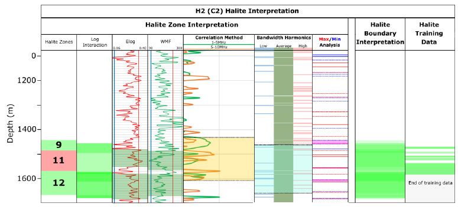
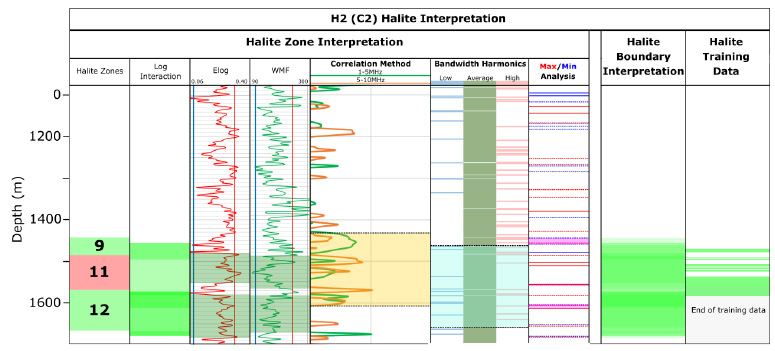

Identification of Potash Deposits in Saskatchewan, Canada using Adrok’s Atomic Dielectic Resonance Technology
Gensource Potash Corporation own two Potash leases near Tugaske, within which they have recently initiated a new exploration and drilling programme — Adrok’s ADR results hope to influence the locations of this.
Introduction
- The main aim of the project is for Adrok to deploy their Atomic Dielectric Resonance (ADR) technology for a self-funded proof of concept survey in Saskatchewan, Canada looking at Potash deposits.
- Data was collected from 13 V-bores in Saskatchewan. This project involves the analysis of two of these V-bores—H1 (C1) and H2 (C2), and will aim to establish confidence that ADR can aid with Gensource’s exploration and resource evaluation programmes.
Key focus:
- Identify the boundaries of the Prairie Evaporite Formation
- Differentiate the small high grade KCl members within the Prairie Evaporite Formation
- Try to detect the thin Potash layers within the high grade zones
Background & Geological Context
- The Prairie Evaporite Formation occurs at about 1500m depth in the area of Tugaske, Saskatchewan. The zone of interest lies in the top 50-80m of this unit where there are alternating Halite (NaCl) and Sylvite (KCl) layers.
- Seismic can pick out the evaporite boundaries, but cannot differentiate between the salt and the potash. Other than drilling, there are currently no other methods that can do this.
- It is hoped that ADR will be able to plot the different layers and differentiate what they are.
- The geology of the Tugaske area changes very little over hundreds of metres with no faults and a stratigraphy that dips regionally from NE to SE.
(far right) Strip log for H2 (C2), one of the wells selected for further analysis by Adrok. The different Potash members are located towards the bottom of the section between 1475—1550m.
Results
H1 (C1)
Figure 3: Results of the lithological zonation for H1 (C1). Each graph was divided into zones based on where major changes and overall trends occurred within the section. From this, it was possible to gain log responses for each dominant lithological group in order to establish a training database, and also allowed the Potash and Halite zones to be identified. Figure 4: Results of the Halite boundary interpretation for H1 (C1) in comparison to the training data. Given the geological succession of the area, the Prairie Evaporite Formation is interpreted to be the deeper Halite unit. The results of the lithological zonation in figure 3 were carried forward and used in conjunction with further results in order to constrain the limits of the Halite. Figure 5: Results of the Potash interpretation for H1 (C1) in comparison to the training data. As for the Halite, the results of the zonation in figure 3 were carried forward and used in conjunction with further interpretation methods in order to constrain the limits and identify the individual Potash members. These were picked out by high Elog and low WMF responses, with the dark red highlighting the highest probability for the presence of Potash.H2 (C2)
 Figure 6: Results of the lithological zonation for H2 (C2). The same method from H1 (C1) was also applied to this hole. Of the 13 zones found in H1, 12 of these were present in H2. Following the completion of the zoning for both holes, the general log responses within each zone were compiled into a training database.

Figure 7: Results of the Halite boundary interpretation for H2 (C2) in comparison to the training data. The same method from H1 (C1) was also applied to this hole. Results of the Log Interaction, Elog, WMF, Correlation Method and Bandwidth Harmonics were stacked in order to create a probability log for Halite presence, from which the Max/Min Analysis could then constrain the limits.
Figure 8: Results of the Potash interpretation for H2 (C2) in comparison to the training data. Again, the same method that was applied to H1 was also applied to H2. Once the limits of the Potash zone has been constrained, the log responses of the Elog and WMF were analysed within this zone in order to identify the individual Potash members.
Figure 6: Results of the lithological zonation for H2 (C2). The same method from H1 (C1) was also applied to this hole. Of the 13 zones found in H1, 12 of these were present in H2. Following the completion of the zoning for both holes, the general log responses within each zone were compiled into a training database.

Figure 7: Results of the Halite boundary interpretation for H2 (C2) in comparison to the training data. The same method from H1 (C1) was also applied to this hole. Results of the Log Interaction, Elog, WMF, Correlation Method and Bandwidth Harmonics were stacked in order to create a probability log for Halite presence, from which the Max/Min Analysis could then constrain the limits.
Figure 8: Results of the Potash interpretation for H2 (C2) in comparison to the training data. Again, the same method that was applied to H1 was also applied to H2. Once the limits of the Potash zone has been constrained, the log responses of the Elog and WMF were analysed within this zone in order to identify the individual Potash members.
Geoscience Analyst
Figure 9: Screenshot of the Geoscience Analyst project.Adrok’s lithology zones and Gensource’s lithology was loaded into Geoscience Analyst so that it could be spatially displayed relative to the coordinates from which the data was collected. Adrok’s lithology zones are displayed to the left for each hole, and clear comparisons between both sets of data are visible (figure 9).
Benefits for Gensource
Fast Data Acquisition: Acquisition of data for 13 V-bores occurred in a week.
Fast Processing: Data processing and return of results within a few weeks.
Target Acquisition: Potash mineralisation was identified in both V-bores.
Confident Depth Anomalies: The signatures seen correlated well with the training data provided.
Very Low Impact: Very little to no environmental or social impact.
Cost Effective: Low cost pre-drilling surveying intelligence to help drilling programme decision making.
Conclusions
- An integrated interpretation approach using the methods detailed above were used to identify broad changes and identify the area in which to look for Halite and Potash in greater detail.
- For Halite interpretation, these techniques were used in conjunction with Log Interaction and Max/Min Analysis.
- The Potash mineralisation was further constrained by combining the above techniques with 5 point average logs and above/ below median logs.
- We have created a training database which establishes lithology relationships which are consistent between the training holes.
- Potash can be identified using ADR. However, further training holes would allow us to refine our training database further.